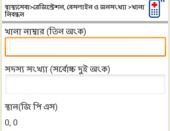
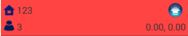

রেজিস্ট্রেশন, বেসলাইন ও জনসংখ্যাঃ
- খানা নিবন্ধনঃ খানা নিবন্ধন করতে নিচের ধাপগুলো অনুসরণ করুন-
- তিন অঙ্কের খানা নাম্বার দিন।
- সদস্যসংখ্যা উল্লেখ করুন।
- জিপিএস চালু রেখে জিপিএস রিডিং নিন। সেভ চাপুন।
- একটি সিস্টেম বার্তা পাবেন। এ পর্যায়ে নিবন্ধন প্রক্রিয়া অব্যাহত রাখতে 'হ্যাঁ' চাপুন। অব্যাহত না রাখতে চাইলে 'না' চাপুন।

- নিবন্ধনকালীন খানাসমুহঃ আপনি যে খানাগুলো নিবন্ধন করেছেন তার তালিকা।
উল্লেখ্য, কিছু খানার ক্ষেত্রে লাল রঙে আবৃত থাকতে পারে। সেক্ষেত্রে বুঝতে হবে সেই খানার জিপিএস রিডিং নেওয়া হয়নি।

- উপকারভোগী নিবন্ধনঃ উপকারভোগী নিবন্ধন বা রেজিস্ট্রেশন করতে নিচের ধাপগুলো অনুসরণ করুন-
- 'উপকারভোগী নিবন্ধন' এ স্পর্শ করুন।
- উপকারভোগী যে খানার অন্তর্ভুক্ত সেই খানা নাম্বার দিয়ে 'হ্যাঁ' চাপুন।
- নিশ্চিত হোন উপকারভোগী এই খানারই অন্তর্ভুক্ত। নিশ্চিত হয়ে থাকলে 'ঠিক আছে' চাপুন।
- এবার রেজিস্ট্রেশন প্রক্রিয়া ধাপে ধাপে সম্পন্ন করুন।
- উপকারভোগী স্থানান্তর / অপসারনঃ উপকারভোগী স্থানান্তর অথবা অপসারন করতে নিচের ধাপগুলো অনুসরণ করুন-
- 'উপকারভোগী স্থানান্তর / অপসারন' এ স্পর্শ করুন।
- উপকারভোগী বর্তমানে যে খানার অন্তর্ভুক্ত সেই খানার নাম্বার দিয়ে উপকারভোগীকে সিলেক্ট করুন।
- উপকারভোগীকে স্থানান্তর বা অপসারন যা করতে চান সেটি সিলেক্ট করুন।
- স্থানান্তর করতে চাইলে যে খানায় স্থানান্তর করতে চান সেই খানার নাম্বার দিন এবং প্রক্রিয়া শেষ করুন।
- মৃত্যু নিবন্ধনঃ উপকারভোগী মৃত্যুবরন করলে নিবন্ধন করুণ।